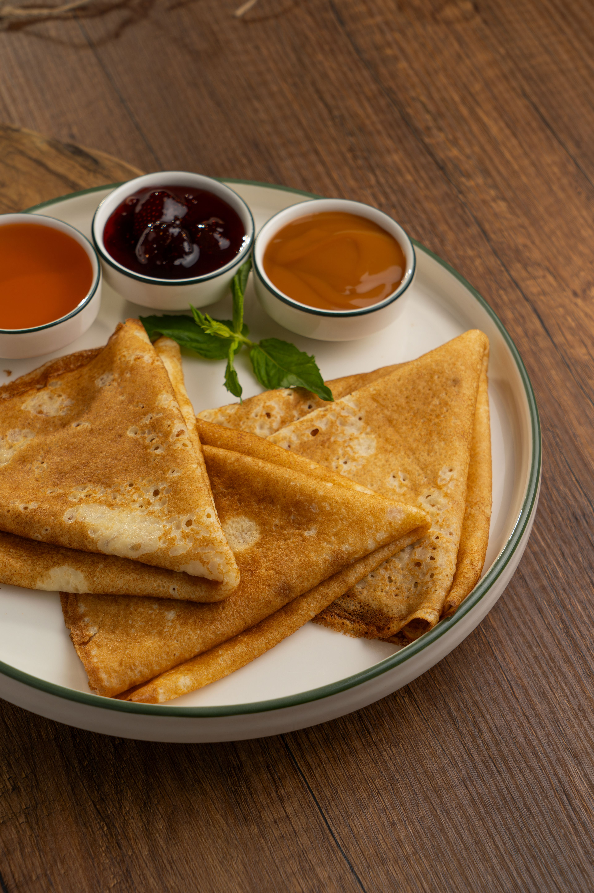

Whisk eggs, milk, water, and salt together in a large mixing bowl. Add flour and melted butter; whisk vigorously until batter is smooth and pourable.
Heat a lightly oiled griddle or frying pan over medium-high heat. Pour or scoop the batter onto the pan, using approximately 1/4 cup for each crêpe. Tilt the pan with a circular motion so that the batter coats the surface evenly.
Cook until the top of the crêpe is no longer wet and the bottom has turned light brown, 1 to 2 minutes. Run a spatula around the edge of the skillet to loosen the crêpe; flip and cook until the other side has turned light brown, about 1 minute more.
Serve hot. Enjoy!